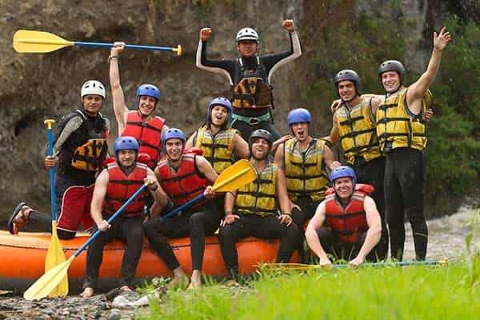
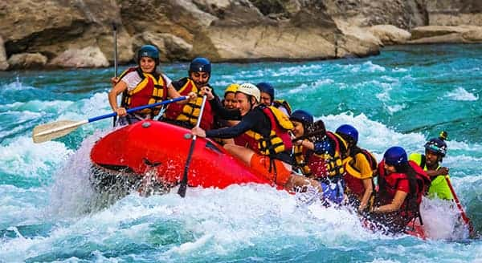

Sundersea Rapids

Whaling Mouse Rapids

Expedition Joes
Otterbends Creek
Trip Information
Sundersea Rapids
- Classification:Class II-III
- Skill level:Beginner / Intermediate
- Length of Run:18 km
- Duration:Full day (6-7 hours)
- Guided/Self-Guided:Both Available
Whaling Mouse Rapids
- Classification:Class III-IV
- Skill level:Intermediate
- Length of Run:14 km
- Duration:Full day (5-6 hours)
- Guided/Self-Guided:Self-Guided
Expedition Joes
- Classification:Class III-IV+
- Skill level:Intermediate to Advanced
- Length of Run:12 km
- Duration:Half day (3-4 hours)
- Guided/Self-Guided:Guided Recommended
Otterbends Creek
- Classification:Class IV-V
- Skill level:Advanced / Expert
- Length of Run:9 km
- Duration:4 hours
- Guided/Self-Guided:Guided Only
Come Raft with us!

Our rapid Guides will help you feel a rush of adrenaline as we assist you on all your rafting adventures! Contact us today to schedule a consultation!
Contact Us